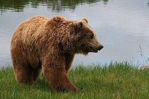
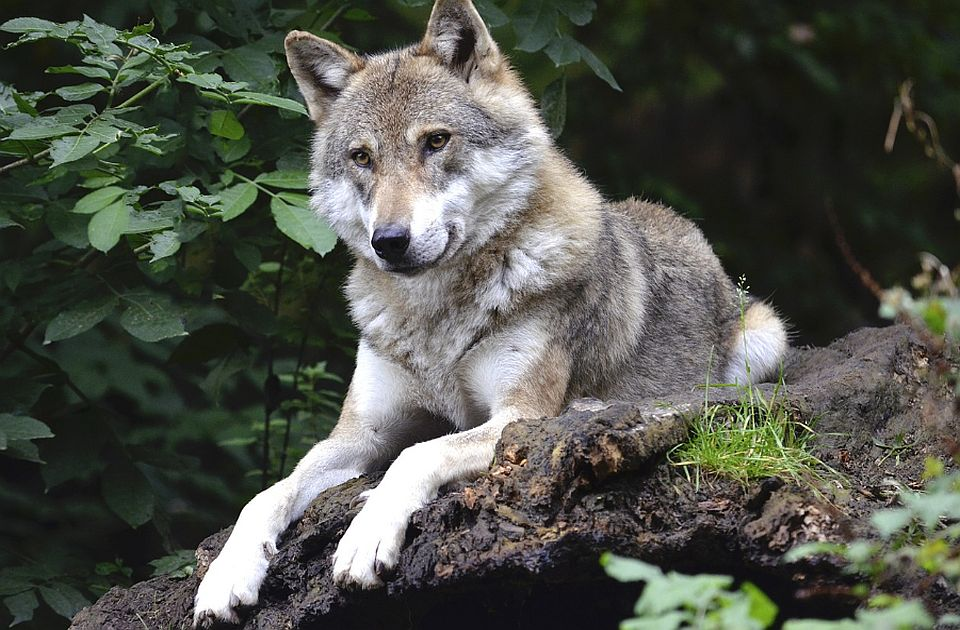
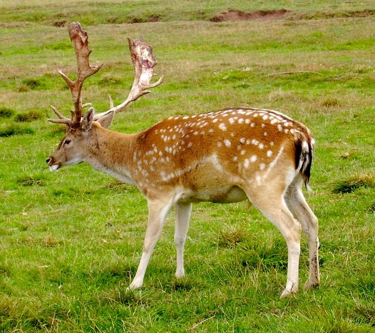

Gjitarët
Gjitarët janë kafshë që lindin të vegjlit dhe i ushqejnë me qumësht. Ata gjenden në shumë mjedise të ndryshme, nga pyjet dhe malet deri në kullota e zona të hapura. Në Shqipëri, gjitarët përbëjnë një pjesë shumë të rëndësishme të faunës së egër.
Disa nga gjitarët më të njohur në territorin shqiptar janë ariu i murrmë, ujku, dhelpra, dreri dhe lepuri i egër. Këto kafshë luajnë rol të rëndësishëm në ruajtjen e ekuilibrit natyror dhe janë pjesë e pasurisë biologjike të vendit.

Ariu i Murrmë
Një nga gjitarët më të mëdhenj në Shqipëri, që jeton kryesisht në zona malore e pyjore.

Ujku
Një grabitqar i fortë dhe inteligjent, i përhapur në zona të ndryshme të vendit.

Dreri
Një kafshë elegante që lidhet me pyjet dhe zonat e qeta natyrore.